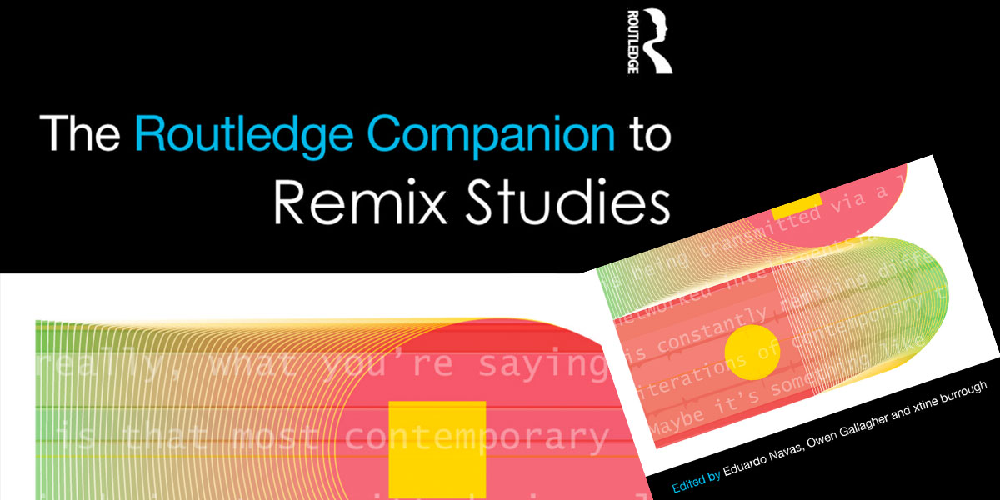
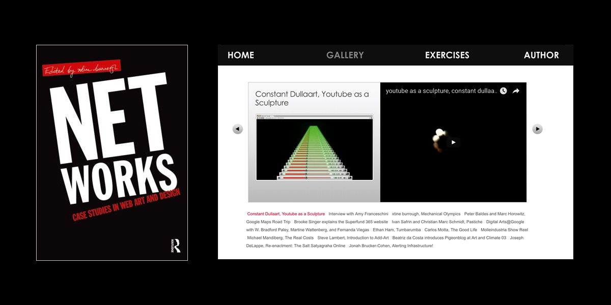
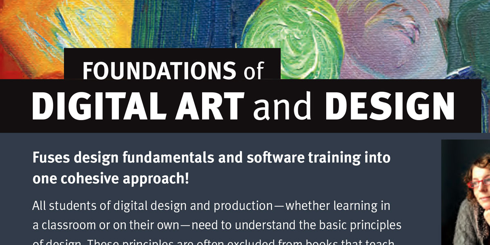
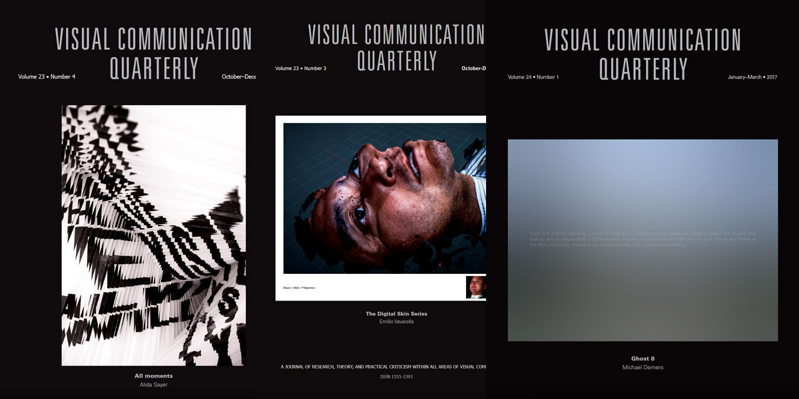

- 
- 
- 
- 
-

Books, Chapters, Articles
The Routledge Companion to Remix Studiesedited by Eduardo Navas, Owen Gallagher, and xtine burrough
Foundations of Digital Art and Design with Adobe Creative Cloudby xtine burrough
Net Works: Case Studies of Web Art and Designedited by xtine burrough
Visual Communication on the Webby xtine burrough and paul martin lester
Digital Foundations: Intro to Media Design with Adobe Creative Suiteby xtine burrough and Michael Mandiberg
“Delocator.net: Using the Web to Organize and Promote Alternative Behaviors” inCulture Jamming: Activism and the Art of Cultural Resistanceedited by Marilyn DeLaure and Moritz Fink, NYU Press, 2017
“Going Crazy with Remix: A Classroom Study by Practice via Lenz v. Universal.” by xtine burrough and Emily Erickson in The Routledge Companion to Remix Studies, edited by Eduardo Navas, Owen Gallagher, and xtine burrough, Routledge, 2015
“Mechanical Olympics.” by xtine burrough in Net Works: Case Studies of Web Art and Design, edited by xtine burrough, Routledge, 2011, pp. 55-65.
@IKnowTheseWords: A Twitterbot Textual Performance” Persona Studies, vol. 2, no. 1, 2016, pp. 12-19. Available online.
xtine burrough